HCI, 3D rozhraní, výběr a manipulace s objekty, pohyb v prostředí, ovládání aplikace a návrh UI pro aplikace virtuální reality.
Vstup a zobrazení jsou dvě nezávislé osy: aplikace mohou kombinovat 2D i 3D na straně vstupu i na straně výstupu.
| Vstup | Zobrazení | Příklad |
|---|---|---|
| 2D (myš) | 3D na monitoru | Blender, Unity editor |
| 3D | 2D na monitoru | SAGE |
| 3D (ruce, head) | 3D headset | VR aplikace |
Dělení „2D UI ve 3D“ vs. „přirozené 3D UI“ je jen popisné. Zavedená herní a HCI terminologie rozlišuje čtyři kategorie, které se ve VR běžně kombinují (Fagerholt & Lorentzon, 2009: čtyři kategorie herního UI podle vztahu ke světu a postavě).
Prvek je součástí světa a příběhu: hodinky na zápěstí, displej na přilbě, obrazovka počítače v místnosti. Postava by ho viděla také. Dead Space
Čistý HUD překrytý přes obraz: stav života, munice, kompas. Postava ho nevidí, existuje jen pro hráče.
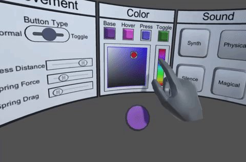
Prvky plovoucí ve světě, ukotvené k pozici nebo povrchu: panely, menu u ruky, štítky nad objekty. Ve VR nejčastější.
Efekt přes celé zorné pole, který mění samotný obraz: krev při zranění, mlha, rozmazání, vinětace. Nese informaci o stavu uživatele.
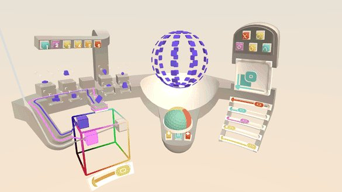
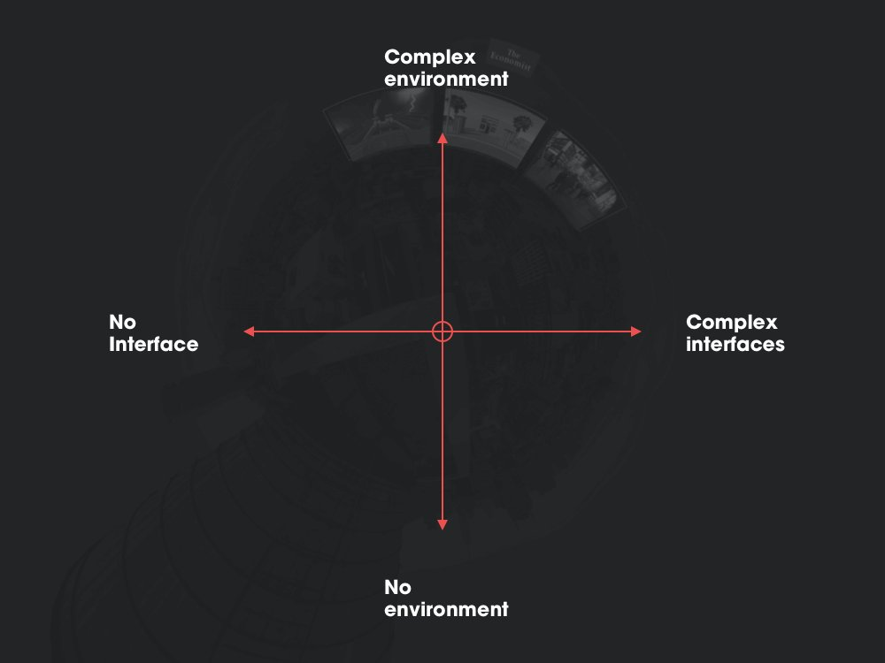
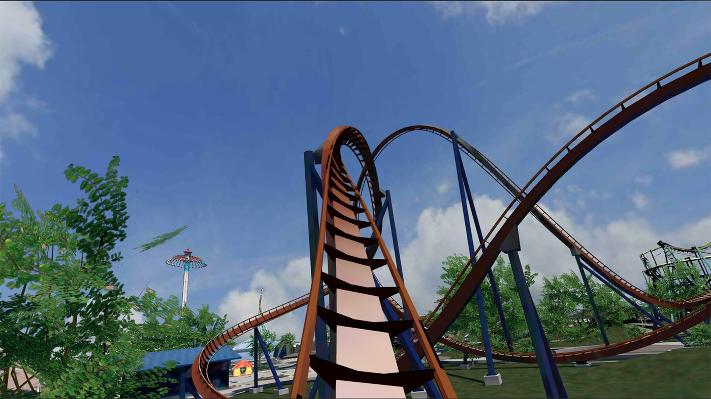
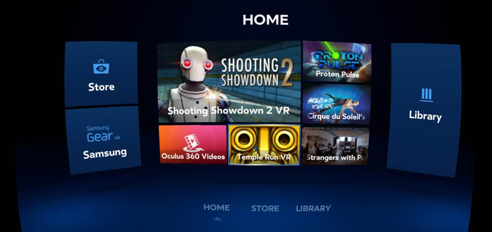
V jakékoliv aplikaci uživatel opakuje stále stejné kategorie akcí.
Každá má vlastní
způsoby implementace i vlastní úskalí.
| Akce | Hlavní otázka |
|---|---|
| Výběr objektu | Jak uživatel zvolí „tenhle“? |
| Manipulace | Jak změní jeho vlastnosti? |
| Pohyb | Jak se dostane jinam bez nevolnosti? |
| Nastavení | Jak najde a potvrdí volbu? |
| Pohyb v UI | Jak prochází nabídky? |
| Systémový stav | Jak ví, co se právě děje? |
Čím je cíl dále a čím je menší, tím déle trvá se na něj trefit a tím více chyb uživatel udělá.
Předpovídá čas potřebný k dosažení cíle na základě jeho vzdálenosti $D$ a velikosti $W$.
$$\text{Čas (MT)} \propto \log_2\left(\frac{2 \cdot \text{Vzdálenost} D}{\text{Velikost} W}\right)$$ Čím je cíl dále a čím je menší, tím je zásah pomalejší a náchylnější k chybám.Všechny čtyři metody výběru se v Unity implementují jedním návrhovým vzorem. Jeho pochopení je nejlepší způsob, jak přestat psát interakce „od nuly“ pro každý objekt zvlášť.
Je to aplikace principu „composition over inheritance“ z přednášky o Unity. Kdyby interaktor znal svůj cíl přímo, přidání hand trackingu by znamenalo přepsat každé tlačítko v projektu. Takhle stačí přidat jeden interaktor: a všechna stávající tlačítka fungují dál, včetně vizuálních stavů.
Zkopírovaný mini svět: reprezentace scény v měřítku 1: desítky, držená v ruce. Uživatel sahá na miniatury a změny se promítají do velké scény.
Přímý úchop rukou (Direct Touch) je velmi intuitivní, ale omezuje uživatele jen na objekty v dosahu jeho fyzické paže.
Sledování rukou je dnes standardem: podporuje ho OpenXR i Meta Quest a Apple Vision Pro bez přídavného zařízení. Uživatel má volné ruce, ale přichází o vše, co ovladač nabízel.
Když uživatel objekt uchopí, musíme se rozhodnout, jak přesně bude následovat ruku. Jsou to dva zásadně odlišné přístupy s odlišnými důsledky pro imerzi i výkon.
Objekt pevně následuje ruku: každý snímek se přepíše jeho transformace. Fyzikální engine je vypnutý (isKinematic).
Objekt je k ruce přitahován silami: Joints, pružiny, změna rychlosti. Ruka je cíl posunu objektu.
Po uchopení přepnout na kinematický režim: objekt přesně sedí v ruce a nekmítá.
Při puštění vrátit fyziku a předat rychlost ruky, aby předmět letěl přirozeně.
Detekovat, že kinematický objekt narazil do překážky, a uvolnit ho: jinak zdí projde.
Neexistuje jedno univerzální nejlepší řešení: vždy záleží na vzdálenosti, přesnosti a účelu interakce.
| Parametr | Přímý úchop (Direct Touch / Grab) | Vzdálený výběr (Ray-casting) |
|---|---|---|
| Primární použití | Blízké objekty (v dosahu paže) | Vzdálené objekty, malé cíle |
| Výhody | Vysoká imerze, intuice, snadná rotace | Rychlý dosah bez nutnosti fyzického pohybu |
| Možný problém | Absence hmatového odporu (prsty prochází skrz) | Třes ruky na dálku, těžkopádné otáčení v $X, Y, Z$ |
| Řešení problému | Vizuální zvýraznění + Haptická vibrace | Přitahování (snapping) + 3D Transform Gizmo |
Totéž řešení se na monitoru zdá být v pořádku, v headsetu může způsobovat problémy.
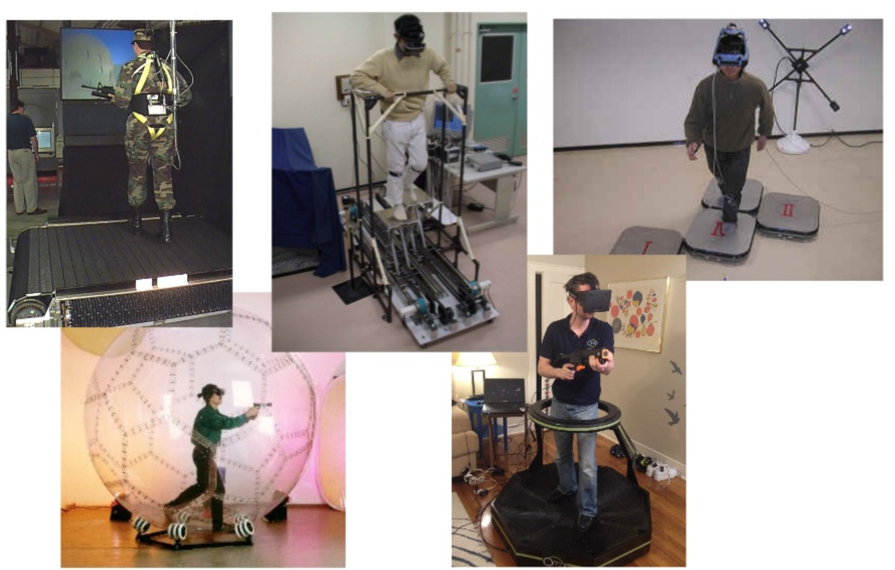
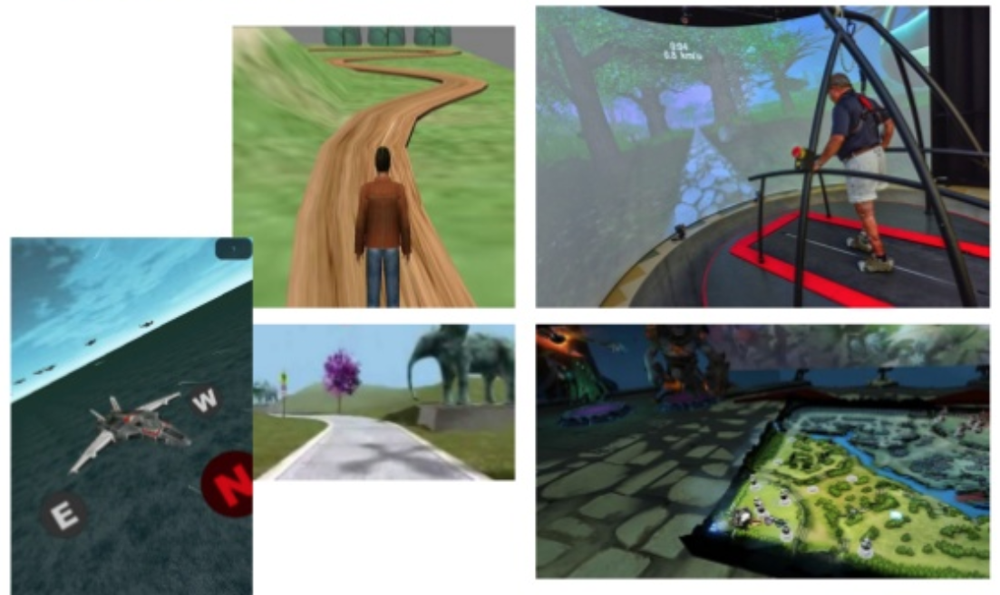
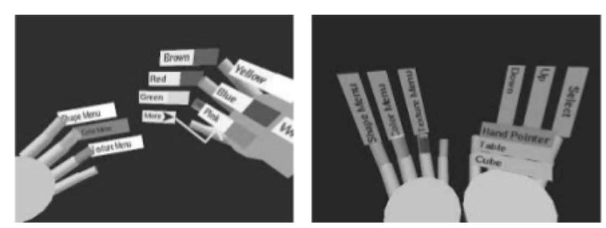
Postupy z klasického návrhu UI platí i pro 3D, jen je třeba trochu pozměnit: všechny pracují s 2D plátnem a je třeba je převést do prostoru.
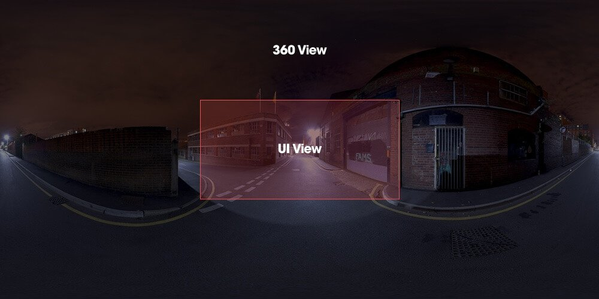
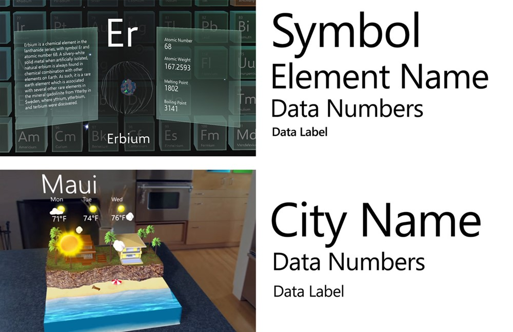
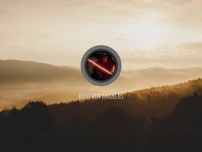
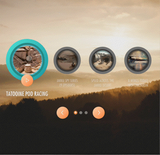
| Zóna | Zorné pole | Vhodné pro |
|---|---|---|
| Přímý směr pohledu | $\pm 15^\circ$ od středu | obsah, primární úkoly |
| Periferně, v dosahu hlavy | do $\pm 30^\circ$ horiz., $+15^\circ$ vert. | stav, hodiny, HUD |
| Po stranách, vyžaduje otočení | nad $\pm 60^\circ$ vyžaduje rotaci celého těla | sekundární, volitelné |
| Za zády | Úplně mimo zorné pole | Moc nepoužívat: uživatel tam nedohlédne |
U moderních headsetů (Quest 3, Vision Pro) je passthrough standardem. Rozhraní už není jen v naší scéně, ale v reálném prostředí: to je nepředvídatelné.
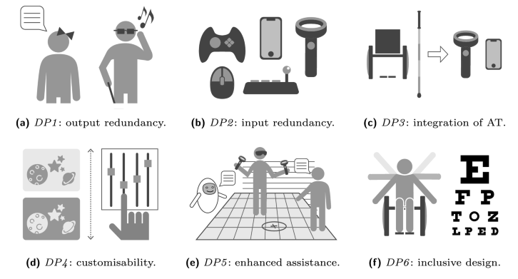
VR je fyzicky náročné médium. Přístupnost tu není „navíc“: bez ní aplikace vylučuje část uživatelů úplně, protože neexistuje alternativní způsob ovládání jako u klávesnice.